Nov 7, 2026 · Yaxin Mu
第二阶段（原型制作）在一天内从零做到可在眼镜上完整跑通的 MVP：核心经济、存档、宝箱与卡牌、藏宝图、6 个工具面板、新手引导、商店与外观，经过 4 轮真机测试迭代。代码在分支 Yaxin-Mu/Prototype（已推送，28 个提交，每个提交单独编译通过）。
工作方式
Build/device_log_*.txt），测完直接读日志还原过程。迭代时间线（2026-11-07，最新在上）
| 时间 | 迭代 | 主要内容 |
|---|---|---|
| 17:30–17:45 | 真机测试 4 之后 | 改名前缀叠加 bug 修复，提交并推送 |
| 17:10–17:23 | 真机测试 3 之后 | 地图自带进度行、图鉴买卡包、Profile 三分区（技能 / 外观 / 宠物） |
| 16:45–17:05 | 真机测试 2 之后 | Start 界面 + 离线收益窗口、锚点引导重做、引导边框 / 箭头 / 开场与结束卡片 |
| 16:17–16:39 | 真机测试 1b 之后 | 开箱奖励窗口（顺序出现、当场开包）、地图下移 |
| 15:45–16:13 | 真机测试 1 之后 | 配色改 RayNeo 官方色、新工具栏、锚点面板、Profile、54 张卡、地图跟随身体 |
| 15:20–15:40 | 迭代 3 | 新手引导 W11、正式 Game 场景、第一个 APK 上眼镜 |
| 15:00–15:20 | 迭代 2 | 待办 / 图鉴 / 设置面板，GDD 稀有度配色 |
| 14:30–15:00 | 迭代 1 | 第一版 HUD + 羊皮纸线稿藏宝图 |
| 13:40–14:30 | 迭代 0 | 核心系统 W1–W4、W7–W9，冒烟测试 |
经济、存档、卡牌、小岛逻辑、分区待办、输入和演示模式全部先做成不依赖 Unity 的纯 C#，数值对照经济表 MVP 列逐项校验。
| 模块 | 做了什么 |
|---|---|
| W1 IdleCore | 金币、被动收益、Coin Rate 20 级价格曲线、宝箱搜索、可注入时钟（D9） |
| W2 存档 / 离线 | 按槽位存 JSON，先写临时文件 + .bak；启动结算、暂停静默补收益（D4），24 h 封顶 |
| W3 小岛逻辑 | 3 个宝箱区域、搜索区域、宝箱落点 |
| W4 卡牌 | 宝箱 3 个奖励位（73/22/5）、卡包 5 张、重复卡换币、特殊卡保底 |
| W7 分区待办 | (分区)- 前缀解析与写回（D3）、待办奖励只发一次 |
| W8 输入 | 触摸板 + 键盘统一成 Confirm / Back / Prev / Next / Up / Down，处理栈 |
| W9 演示 / Reset | 1x / 60x / 1800x 倍率、演示存档槽、三次确认 Reset |
发现并修正的问题
先和 Yaxin 对齐视觉方向，再用代码画出第一版的 HUD 和藏宝图。
对齐的方向
截图审查中发现并修正的问题
V1 截图（从提交 cf9b573 重新渲染，已含上述修正）
V1-1 正前方 HUD：羊皮纸配色、旧工具栏（待办 / 地图 / 图鉴 / 升级 / 番茄钟 / 设置）、“Chest >”文字提示
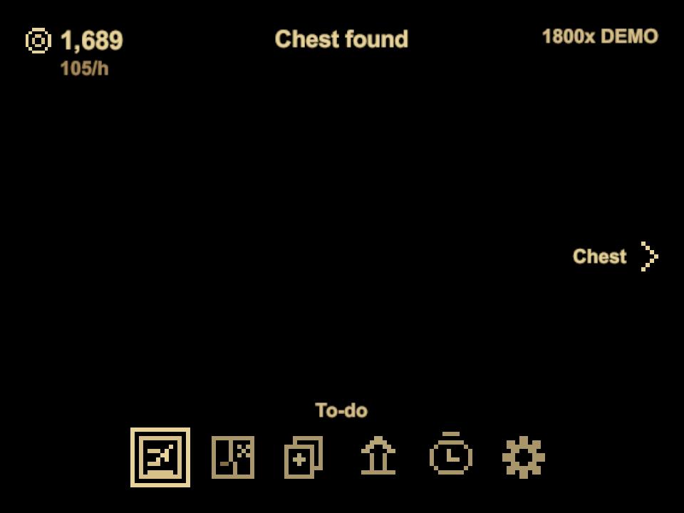
V1-2 藏宝图：固定在开局视线右侧、与眼睛等高，进度行在地图下方
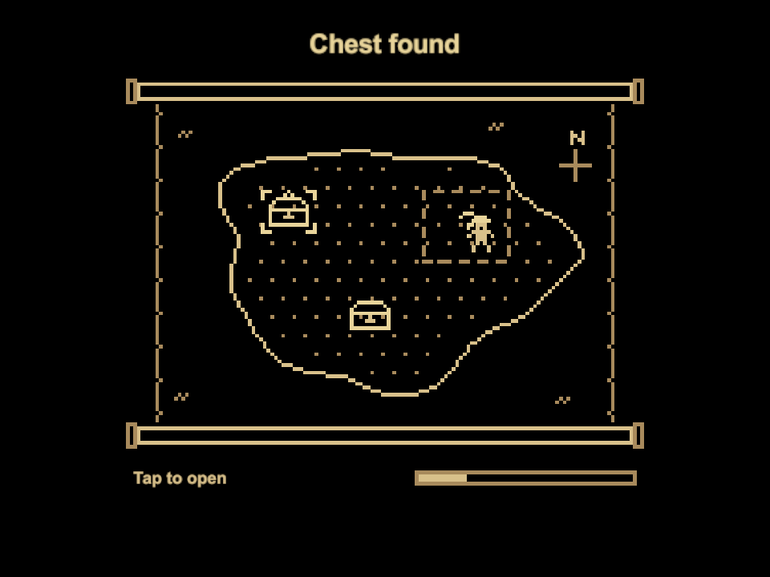
V1-3 开箱后：奖励用顶部提示显示
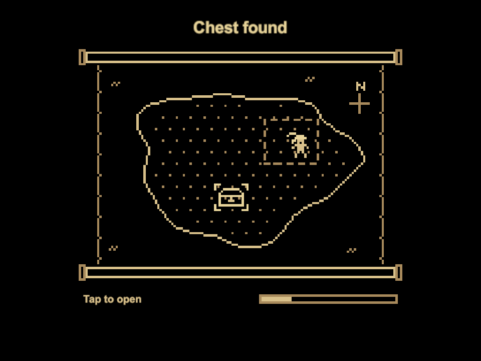
待办（W7 界面）、图鉴（W5）、设置（W9 Reset + 演示隐藏开关）三个面板上线，共用一套面板框架。
反馈与修正
V2 截图（从提交 33c29ac 重新渲染）
V2-1 待办面板
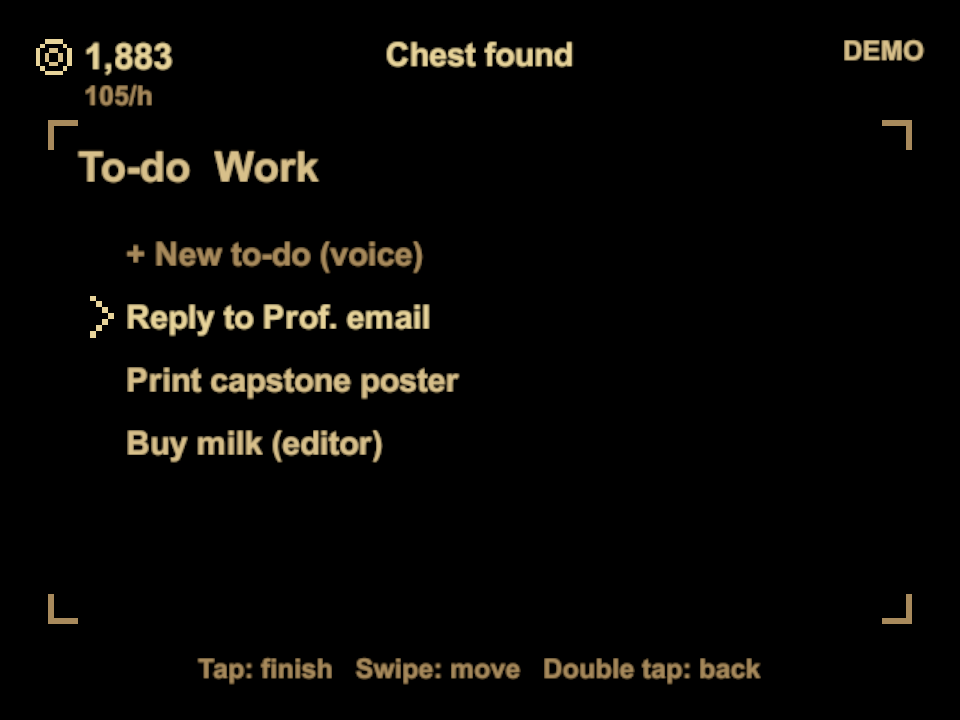
V2-2 图鉴 3×3（GDD 稀有度配色）
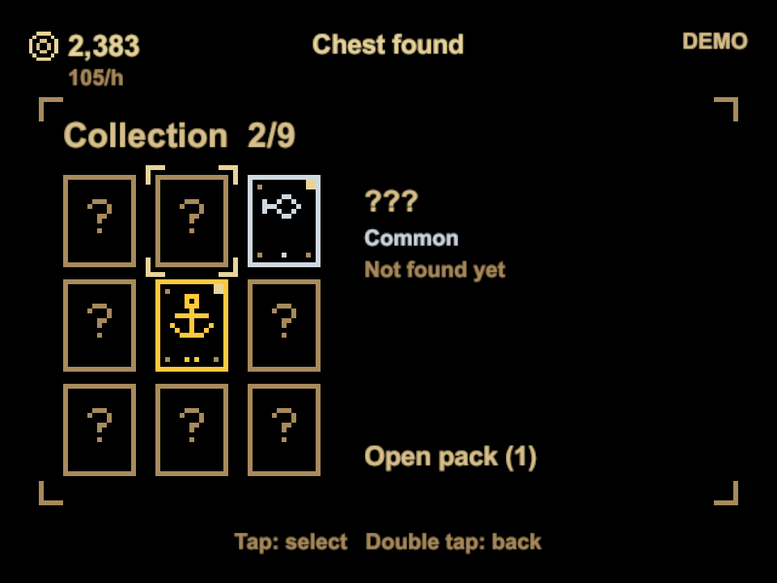
V2-3 图鉴里开卡包
V2-4 设置：Reset 第二次确认

新手引导按演示路径第 1–10 步串起来，生成给眼镜用的 Game.unity（Build 第一位），第一个 APK 装上眼镜。
V3 截图（从提交 e7a5f9e 重新渲染，即第一次上眼镜的版本；引导截图来自当时的自动测试）
V3-1 引导开始：只有一行提示，没有欢迎卡片

V3-2 设锚点：点击即放置，无锚点界面（真机测试 3 发现的主要问题）

V3-3 待办：面板自动弹出
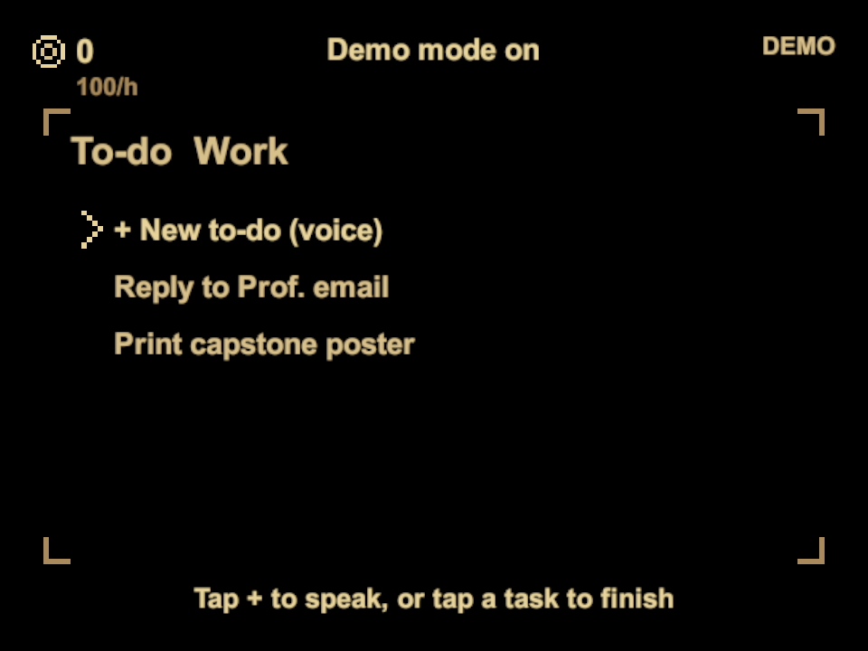
V3-4 工具栏步骤

V3-5 教程搜索：地图缩小、提示在地图下方
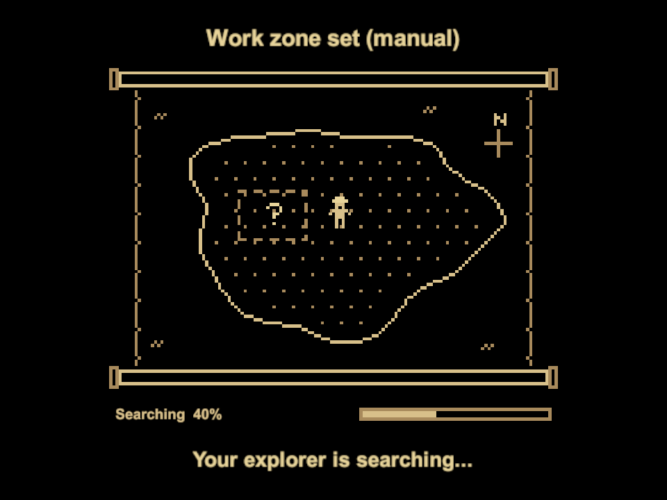
V3-6 教程宝箱出现
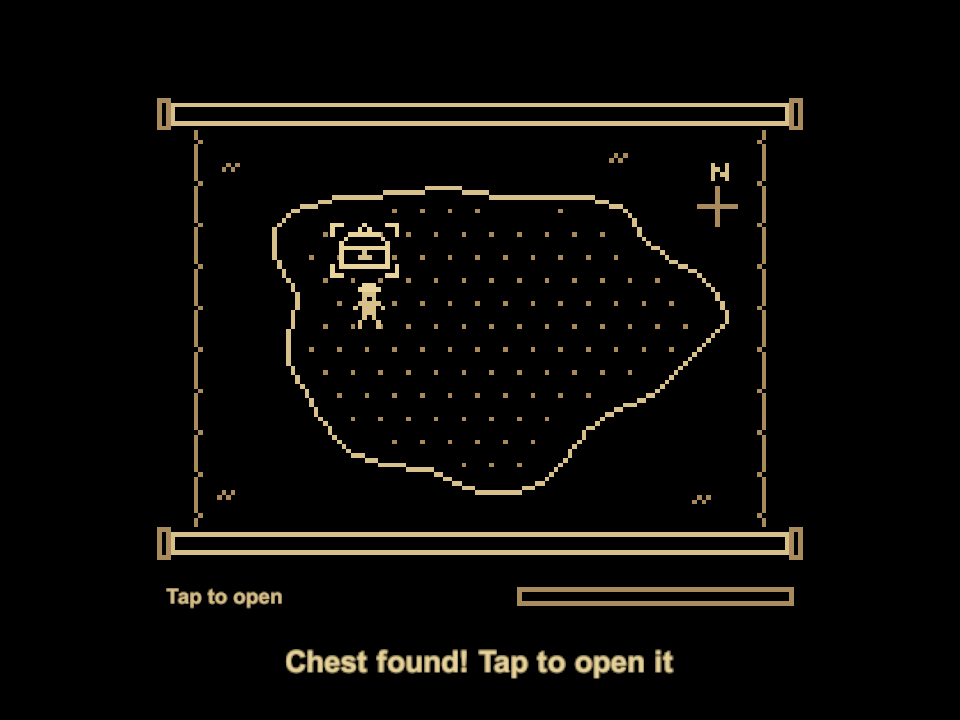
V3-7 图鉴：去这里开卡包

V3-8 卡包展开
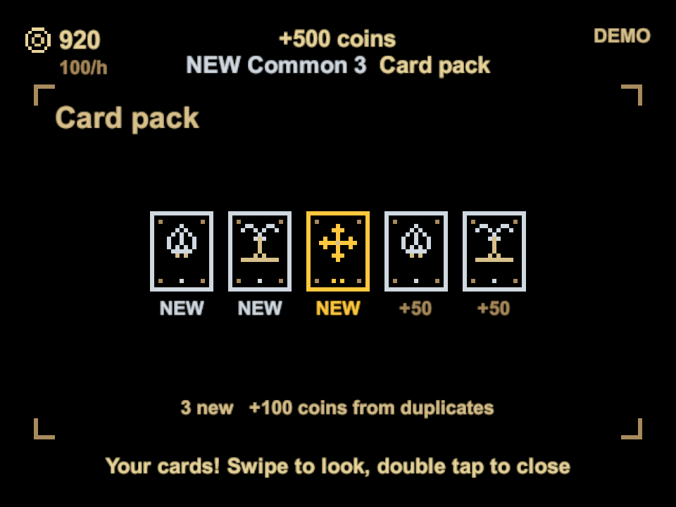
第一次戴眼镜跑完引导前半段，Yaxin 提了 8 条意见，全部改完。
| # | 发现的问题 | 改动 |
|---|---|---|
| 1 | 找不到放多个锚点的地方 | 新增锚点工具（菱形图标）：3 个槽位三格布局，预设名称 + 语音改名（借 To-do 语音流程拿文字，再删掉临时待办） |
| 2 | 图标太抽象 | 待办改为笔 + 记事本，图鉴改为宝箱 |
| 3 | 主界面看不到分区待办 | 金币下方显示当前分区 + 前 3 条待办（是漏做，不是锚点问题） |
| 4 | 升级应该是个可打开的工具 | 改为 Profile（角色）面板 |
| 5 | 地图：进度条要在主界面、不要 Map 工具、太高、用箭头不用文字 | 进度条移到底部中心；地图跟随身体方向（右侧 55°，长时间朝新方向才跟过去）；双箭头提示 |
| 6 | Focus timer 改名 | 改为 Pomodoro |
| 7 | 配色怪 | 换成 RayNeo 官方色：主色青 #4DE2FF、强调绿 #44FF66、次要灰青 #7FA8B8 |
| 8 | 图鉴要先看三个稀有度的进度 | 三格总览（已获得/18），每组 6×3 页；卡池扩到 54 张 |
同一轮的其他发现
todoEdit 同步重写前缀。日志显示 2 分半测试无报错；引导停在“开卡包”，因为玩家不知道卡包在图鉴里。
| 发现的问题 | 改动 |
|---|---|
| 地图还是太高 | 放到视线下方约 8° |
| 开箱奖励只有一行文字提示，卡包要去图鉴里找 | 开箱奖励窗口：奖励逐个出现，点击卡包当场开包，5 张卡带外框排在后面；窗口打开时隐藏地图 |
| 一次滑动偶尔跳两格（日志：一次滑动发 2 个步进事件） | 防连发 0.12 s → 0.18 s |
| 存档停在“开教程宝箱”但宝箱已开时会卡住 | 恢复时自动跳到下一步 |
主要问题：引导里放锚点“把人带到了 Todo”。日志显示 16:42:36 点一下就静默放好锚点并立刻打开待办面板，没有锚点界面。
| 发现的问题 | 改动 |
|---|---|
| 放锚点直接跳到 Todo | 这一步打开锚点面板第 1 格：先放锚点，焦点自动到名字行改名，关面板后才进下一步；待办面板不再自动弹出 |
| 进游戏没有 Start | 每次启动先进 Start 界面，只有 Start 按钮和金币 |
| 退出重进没有离线收益窗口 | 离线收益窗口排在 Start 前；点击后金币显示“原有 + 新增”再滚动到最终值 |
| 看不出是在教学 | 提示放进绿色边框并标 TUTORIAL k/12；工具栏图标上方闪烁向下箭头；开场欢迎卡片 |
| 引导结束没有提示 | 结束卡片：Tutorial complete, have a great day |
| “Searching”很怪 | 改为 Treasure hunt 42% |
补充：离线收益窗口改为显示 5 位小数（D4 原定 10 位），日志仍保留 10 位。
Reset 后完整引导一遍走通（2 分 9 秒，无报错）。Yaxin 提了 3 条新需求，日志里发现 1 个 bug。
| 问题 / 需求 | 改动 |
|---|---|
| 看地图时主界面进度条一起隐藏 | 地图上方自带进度行，跟地图一起固定；看地图时主界面那行隐藏 |
| 有钱了需要购物 | 图鉴总览下方“Buy a pack 3,000 coins”，买到后当场开包 |
| Profile 要分区 | 技能 / 外观 / 宠物三格；服装 4 种（含裤装和长裙）、颜色 6 种、宠物 4 种，部分免费、其余花金币解锁；宠物在地图上跟着角色走 |
bug：来回改名后待办变成 (Work)-(Study)-(Office)-(Study)-… | 改名时先用旧名字去掉前缀再加新的；显示时自动清理已叠加的预设名前缀 |
商店与外观的价格都是占位值（见待办事项）。之后购买会写入 [Shop] 日志。
| 事实 | 结果 | 意义 |
|---|---|---|
todoEdit 改待办文字 | 可用 | D3（分区写进待办文字）成立 |
SLAM 模式下 startTodo 语音新建 | 可用，自动回到游戏，SLAM 正常 | 10-19 的开放问题关闭 |
deleteTodo | 已接入（语音改名用） | 真机尚未单独验证 |
| 一次滑动 = 2 个步进事件 | 间隔多为 < 40 ms，偶尔 > 120 ms | 防连发调到 0.18 s |
| 屏幕休眠时 app 不往下跑 | adb shell input keyevent KEYCODE_WAKEUP 后正常 | 测试前先唤醒 |
| 设备日志缓冲 64 KB | 几秒就被系统日志冲掉 | 测试时实时 logcat 写到电脑 |
| 开局即进 Work 分区 | SLAM 原点每次重置，锚点在原点附近必然命中 | 不能证明锚点跨会话保留（测试 3 待做） |
deleteTodo）、商店 / 外观 / 宠物main以下截图按眼镜 30° 视场在 Unity 里自动渲染，黑色 = 透明。全部截图（32 张）归档在工作区 Screenshots/2026-11-07/。
真机测试 1–4 之间的中间版本当时没有分开提交，最后合并在同一个提交里，所以无法单独重新渲染；它们的变化见各测试小节的表格，最终效果见下方。V1–V3 的截图归档在 Screenshots/v1-parchment-hud-map/、v2-panels/、v3-onboarding-first-apk/。
1. 离线收益窗口（启动时先出现；截图时还是 10 位小数，现为 5 位）

2. Start 界面（金币先显示“原有 + 新增”）

3. 引导开场卡片

4. 引导：锚点步骤（TUTORIAL 4/12）
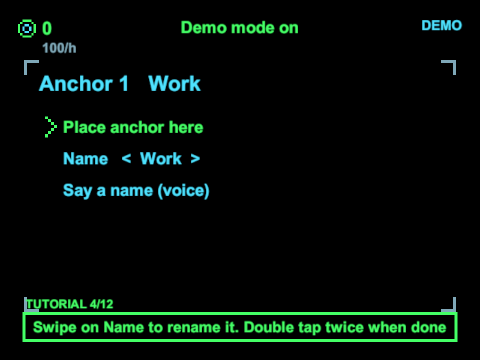
5. 引导：箭头指向待办图标
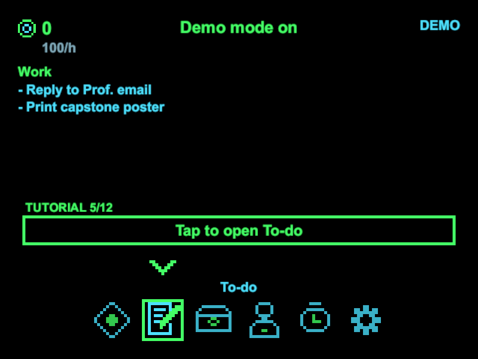
6. 主界面（分区待办、Treasure hunt 进度、看右边的双箭头、新工具栏）

7. 藏宝图（身体跟随，视线下方；进度行在地图上方）

8. 开箱奖励窗口

9. 奖励窗口里当场开卡包
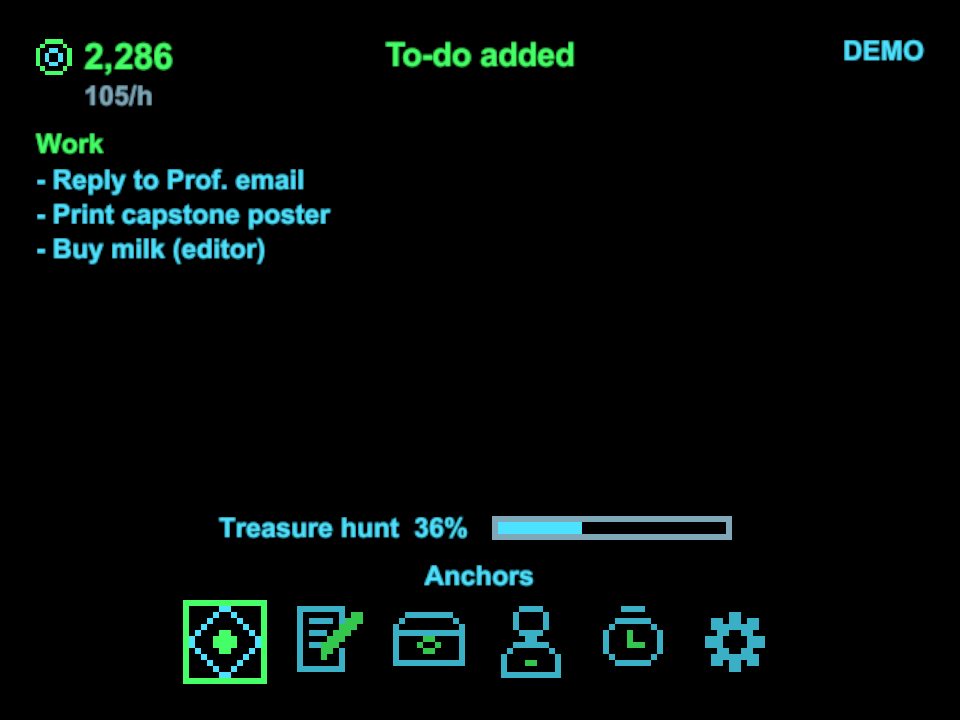
10. 锚点面板

11. 图鉴总览 + 买卡包

12. 图鉴：珍藏页 6×3

13. Profile 总览
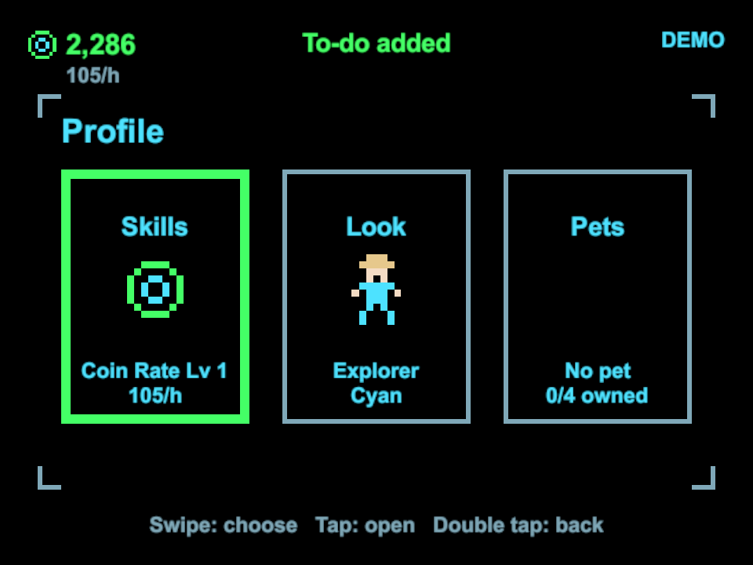
14. Profile：外观

15. Profile：宠物

16. 引导结束卡片
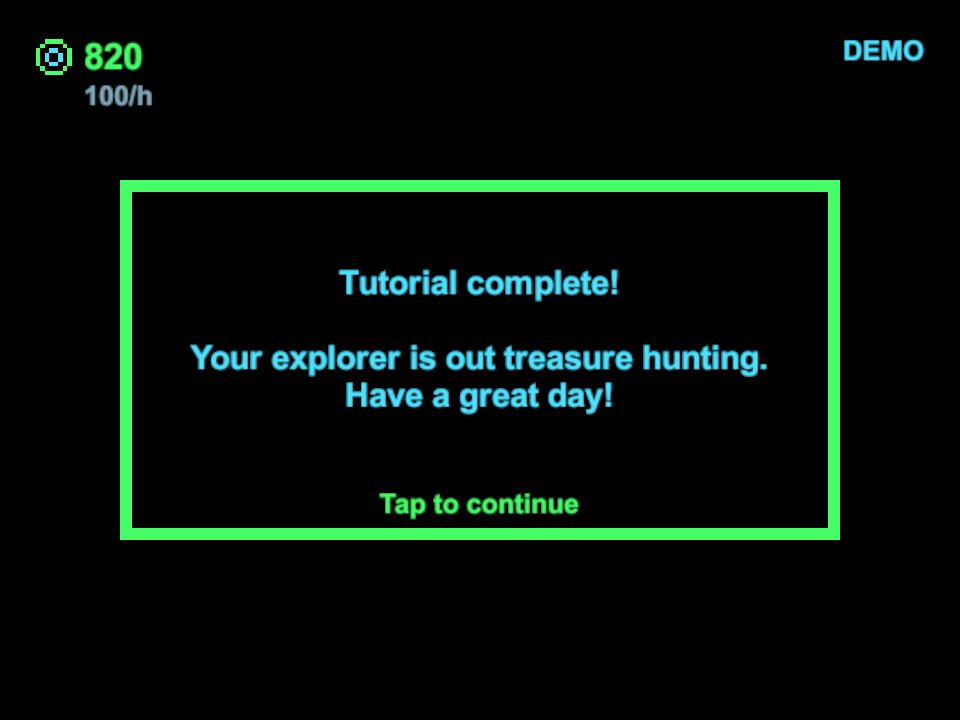